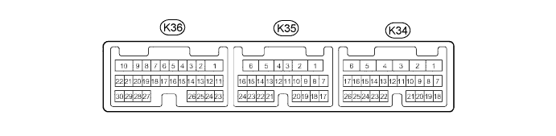

ACTIVE HEIGHT CONTROL SUSPENSION > TERMINALS OF ECU |
| CHECK SUSPENSION CONTROL ECU |

| Terminal No. (Symbol) | Wiring Color | Terminal Description | Condition | Specified Condition |
| K36-1 (SLB) - K34-1 (GND) | R - W-B | No. 1 height control valve assembly and front suspension control valve power supply | Engine running | 9 to 14 V |
| K36-2 (FBL+) - K34-1 (GND) | R - W-B | Front damping force control actuator LH | Engine switch off | 12.0 to 13.6 Ω |
| K36-3 (FAL-) - K34-1 (GND) | L - W-B | Front damping force control actuator LH | Engine switch off | 12.0 to 13.6 Ω |
| K36-4 (FAL+) - K34-1 (GND) | B - W-B | Front damping force control actuator LH | Engine switch off | 12.0 to 13.6 Ω |
| K36-5 (FAR-) - K34-1 (GND) | L - W-B | Front damping force control actuator RH | Engine switch off | 12.0 to 13.6 Ω |
| K36-6 (FAR+) - K34-1 (GND) | R - W-B | Front damping force control actuator RH | Engine switch off | 12.0 to 13.6 Ω |
| K36-7 (SLFR) - K34-1 (GND) | R - W-B | Front leveling valve RH |
| During control: Alternating between 10 and 15.5 V After control: 0 to 0.5 V |
| K36-8 (SLFL) - K34-1 (GND) | W - W-B | Front leveling valve LH |
| During control: Alternating between 10 and 15.5 V After control: 0 to 0.5 V |
| K36-9 (SLRR) - K34-1 (GND) | R - W-B | Rear leveling valve RH |
| During control: Alternating between 10 and 15.5 V After control: 0 to 0.5 V |
| K36-10 (SLAC) - K34-1 (GND) | B - W-B | Accumulator valve |
| During control: Alternating between 10 and 15.5 V After control: 0 to 0.5 V |
| K36-11 (CRFR) - K34-1 (GND) | G - W-B | Front spring rate switch valve RH |
| During control: Alternating between 10 and 15.5 V After control: 0 to 0.5 V |
| K36-12 (FBL-) - K34-1 (GND) | P - W-B | Front damping force control actuator LH | Engine switch off | 12.0 to 13.6 Ω |
| K36-13 (SHB3) - K34-1 (GND) | B - W-B | Rear height control sensor RH power source | Engine switch on (IG) | 4.75 to 5.25 V |
| K36-14 (SHB2) - K34-1 (GND) | B - W-B | Front height control sensor LH power source | Engine switch on (IG) | 4.75 to 5.25 V |
| K36-15 (SHG2) - K34-1 (GND) | G - W-B | Front height control sensor LH ground | Always | Below 1 Ω |
| K36-16 (RC) - K34-1 (GND) | G - W-B | Pump motor relay | Engine switch on (IG) | Below 1 V |
| 0 to 14 V | |||
| K36-17 (FBR-) - K34-1 (GND) | P - W-B | Front damping force control actuator RH | Engine switch off | 12.0 to 13.6 Ω |
| K36-18 (FBR+) - K34-1 (GND) | R - W-B | Front damping force control actuator RH | Engine switch off | 12.0 to 13.6 Ω |
| K36-19 (SHG4) - K34-1 (GND) | G - W-B | Rear height control sensor LH ground | Always | Below 1 Ω |
| K36-20 (SHG3) - K34-1 (GND) | G - W-B | Rear height control sensor RH ground | Always | Below 1 Ω |
| K36-22 (SLRL) - K34-1 (GND) | G - W-B | Rear leveling valve LH |
| During control: Alternating between 10 and 15.5 V After control: 0 to 0.5 V |
| K36-23 (CRFL) - K34-1 (GND) | B - W-B | Front spring rate switch valve RH |
| During control: Alternating between 10 and 15.5 V After control: 0 to 0.5 V |
| K36-24 (SHRR) - K34-1 (GND) | W - W-B | Rear height control sensor RH | Engine switch on (IG) | 0.5 to 4.5 V |
| Approx. 2.5 V | |||
| K36-25 (SHB4) - K34-1 (GND) | B - W-B | Rear height control sensor LH power source | Engine switch on (IG) | 4.75 to 5.25 V |
| K36-26 (SHFR) - K34-1 (GND) | L - W-B | Front height control sensor RH | Engine switch on (IG) | 0.5 to 4.5 V |
| Approx. 2.5 V | |||
| K36-27 (SHRL) - K34-1 (GND) | R - W-B | Rear height control sensor LH | Engine switch on (IG) | 0.5 to 4.5 V |
| Approx. 2.5 V | |||
| K36-29 (SLRG) - K34-1 (GND) | L - W-B | Rear gate valve | Rear Gate Valve item of Active Test activated | ON: Alternating between 10 and 15.5 V OFF: 0 to 0.5 V |
| K36-30 (SLFG) - K34-1 (GND) | GR - W-B | Front gate valve | Front Gate Valve item of Active Test activated | ON: Alternating between 10 and 15.5 V OFF: 0 to 0.5 V |
| K35-1 (BAT) - K34-1 (GND) | W - W-B | Power supply for damping force control actuator | Always | 11 to 14 V |
| K35-2 (RAL-) - K34-1 (GND) | R - W-B | Rear damping force control actuator LH | Engine switch off | 12.0 to 13.6 Ω |
| K35-3 (RAL+) - K34-1 (GND) | W - W-B | Rear damping force control actuator LH | Engine switch off | 12.0 to 13.6 Ω |
| K35-4 (RBR-) - K34-1 (GND) | G - W-B | Rear suspension control actuator RH | Engine switch off | 12.0 to 13.6 Ω |
| K35-5 (RAR+) - K34-1 (GND) | W - W-B | Rear damping force control actuator RH | Engine switch off | 12.0 to 13.6 Ω |
| K35-6 (GND) - Body ground | W-B - Body ground | Ground | Always | Below 1 Ω |
| K35-7 (RBL-) - K34-1 (GND) | G - W-B | Rear damping force control actuator LH | Engine switch off | 12.0 to 13.6 Ω |
| K35-8 (RBL+) - K34-1 (GND) | L - W-B | Rear damping force control actuator LH | Engine switch off | 12.0 to 13.6 Ω |
| K35-10 (SPB) - K34-1 (GND) | B - W-B | Fluid pressure sensor power source | Engine switch on (IG) | 4.75 to 5.25 V |
| K35-12 (SHG1) - K34-1 (GND) | G - W-B | Front height control sensor RH ground | Always | Below 1 Ω |
| K35-13 (RBR+) - K34-1 (GND) | L - W-B | Rear damping force control actuator RH | Engine switch off | 12.0 to 13.6 Ω |
| K35-14 (RAR-) - K34-1 (GND) | R - W-B | Rear damping force control actuator RH | Engine switch off | 12.0 to 13.6 Ω |
| K35-15 (SHB1) - K34-1 (GND) | B - W-B | Front height control sensor RH power source | Engine switch on (IG) | 4.75 to 5.25 V |
| K35-17 (TOIL) - K34-1 (GND) | W - W-B | Fluid temperature sensor | Engine switch on (IG) | 0.15 to 4.79 V |
| K35-18 (STG) - K34-1 (GND) | G - W-B | Fluid temperature sensor ground | Always | Below 1 Ω |
| K35-19 (SPG) - K34-1 (GND) | G - W-B | Fluid pressure sensor ground | Always | Below 1 Ω |
| K35-20 (PACC) - K34-1 (GND) | W - W-B | Fluid pressure sensor | Engine switch on (IG) | 0.47 to 4.62 V |
| Approx. 0.5V | |||
| K35-21 (SHFL) - K34-1 (GND) | W - W-B | Front height control sensor LH | Engine switch on (IG) | 0.5 to 4.5 V |
| Approx. 2.5 V | |||
| K34-1 (GND) - Body ground | W-B - Body ground | Ground | Always | Below 1 Ω |
| K34-2 (TSW1) - K34-1 (GND) | GR - W-B | Absorber control switch |
| 9 to 14 V |
| Below 1.5 V | |||
| K34-3 (BAT2) - K34-1 (GND) | R - W-B | Power supply for No. 1 height control valve and front suspension control valve | Always | 11 to 14 V |
| K34-5 (IG) - K34-1 (GND) | G - W-B | IG power supply | Engine switch on (IG) | 11 to 14 V |
| K34-7 (CANH) - K34-8 (CANL) | V - L | CAN communication line | Engine switch off | 54 to 69 Ω |
| K34-9 (TSW2) - K34-1 (GND) | B - W-B | Damping force control switch |
| 9 to 14 V |
| Below 1.5 V | |||
| K34-11 (TD) - K34-1 (GND) | W - W-B | Height control OFF switch |
| Below 1.5 V |
| 9 to 14 V | |||
| K34-13 (SGG2) - K34-1 (GND) | G - W-B | Front acceleration sensor LH ground | Always | Below 1 Ω |
| K34-14 (SGG1) - K34-1 (GND) | G - W-B | Front acceleration sensor RH ground | Always | Below 1 Ω |
| K34-15 (SGB1) - K34-1 (GND) | B - W-B | Front acceleration sensor RH power source | Engine switch on (IG) | 4.75 to 5.25 V |
| K34-20 (UPSW) - K34-1 (GND) | LG - W-B | Height control switch (Up) |
| Below 1.5 V |
| K34-21 (DNSW) - K34-1 (GND) | G - W-B | Height control switch (Down) |
| Below 1.5 V |
| K34-22 (SGFL) - K34-1 (GND) | W - W-B | Front acceleration sensor LH |
| Approx. 2.5 V |
| K34-23 (SGB2) - K34-1 (GND) | B - W-B | Front acceleration sensor LH power source | Engine switch on (IG) | 4.75 to 5.25 V |
| K34-24 (SGFR) - K34-1 (GND) | W - W-B | Front acceleration sensor RH |
| Approx. 2.5 V |